Jumbo 300mm Canon extension tube with autofocus
by thenickdude
This massive 300mm extension tube for Canon cameras is a little bit over the top, but allows you to achieve ultra-macro magnifications beyond 1x using long lenses! (100mm+)
It reuses the metal mount pieces from Kenko extension tubes to make mating it with your lens and camera smooth, but replaces the original lens contact system with its own. This preserves the electronic aperture and autofocus control of your lens.
The advantage of using a long extension tube with a long lens (rather than adding a close-up lens) is the exceptionally high working distance it allows, see the performance notes below.
The assembled weight is 340 grams.
If you're interested in something a little less ridiculous, a 150mm version of the tube is also provided.
Performance with the Sigma 180mm f/3.5 APO Macro DG HSM
Minimum magnification 1.7x at 240mm working distance
Maximum magnification 5x at 170mm working distance (That means that a subject 7.2mm x 4.8mm completely fills the frame!)
Compare these numbers to the bare Canon MP-E 65mm, which offers a similar magnification range:
Minimum magnification 1x at 100mm working distance
Maximum magnification 5x at 41mm working distance
Known issues with this version
The current version is v1, with the following issues:
- Lens release lever tends to tilt and bind up if pressed towards the bottom/outside of the lever - clearances may need to be adjusted. Press on it close to the tube instead.
- Mechanical vignetting of unknown origin is observed at all apertures (corners are black). Internal tube diameter matches Canon's and Kenko's extension tubes - does it need to be wider for a longer tube?
- Hotspot and loss of contrast visible in the centre of the image. This is likely due to light reflections inside the tube. A matte spraypaint coating inside the tube may improve this.
- I'm not nearly swole enough to hold my arm straight out in front of my face to support this thing for long periods of time.
If you liked this tube, please also check out my twin-flash arm system for the MT-24EX that's shown in the second photo.
Bill of materials
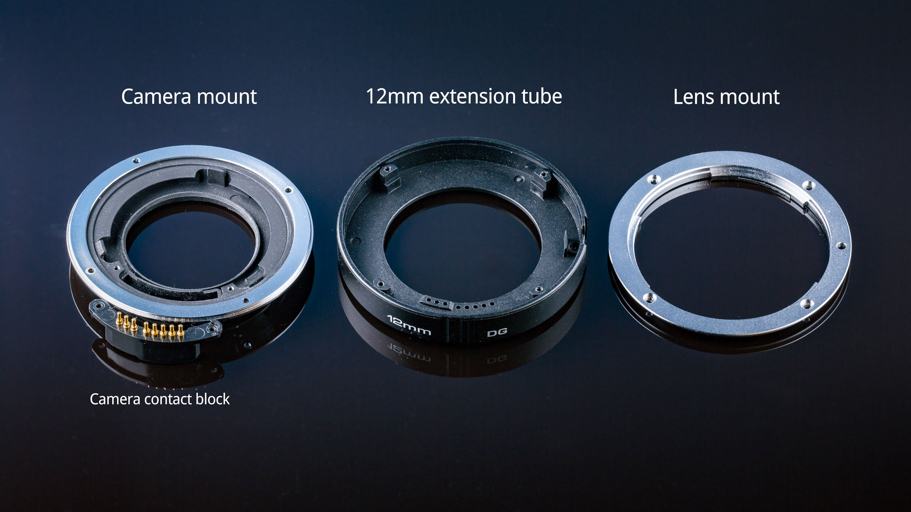
Disassembled Kenko 12mm tube
Kenko tubes
This design uses the metal mount rings, locking pin, locking spring and fasteners harvested from Kenko EF AF extension tubes:
https://www.bhphotovideo.com/c/product/375102-REG/Kenko_AEXTUBEDGC_Auto_Extension_Tube_Set.html
The ones I'm using are labelled "FOR C/AFs, DG". Any of the lengths of tubes can be used for this project (12, 20 or 36mm) though note that the 12mm tube uses shorter fasteners which won't be as strong when re-used, and its release spring will probably need a shim underneath to bring it to length.
The set of Kenko camera-side contacts ("camera contact block") from the 20mm version can be reused instead of the printed replacement one shown here. The ones from the other size tubes have pins that are too-short and too-long respectively and must be replaced with the printed version.
I would strongly recommend buying more than one Kenko tube (or the set of 3) because it is useful to have a spare extension tube for debugging later (using the spare tube to simulate a lens and camera to check that the contacts of the printed tube line up correctly).
The use of the Kenko extension tube parts is completely reversible and you can disassemble this project to recover the Kenko parts.
Fasteners
I'm including links to compatible examples from McMaster-Carr's catalog, but note that McMaster doesn't ship internationally, at least to hobbyists (you'll receive an email after submitting your order: "Thank you for considering McMaster-Carr for your purchase. However, we will not accept orders from your location due to the cost of complying with US export regulations."). Banggood and AliExpress both offer extremely cheap fasteners if your local hardware store doesn't stock them.
- M3 x 6mm pan/button head machine screws x 7 pieces for joining the printed mounts to the main body of the extension tube.
- Head height must be smaller than 2.0mm, which rules out cap-head screws!
- 5mm shaft length will also work
- Should be black to reduce light reflections, but you can use regular fasteners and paint them black after installation instead
- Example from McMaster-Carr
- M3 hex nut x 7 pieces
- Thickness must be smaller than 3.0mm (standard nuts are around 2.5mm thick which are fine)
- Example from McMaster-Carr
- M1.6 or M1.7 x 5 or 6mm plastic thread-forming screw x 2 pieces
- These two screws hold the lens contact block against the printed lens mount.
- Head diameter not to exceed 3mm, head height not to exceed 2mm
- Unfortunately the original Kenko screws can't be re-used for this task because the Kenko tube doesn't have enough screws in it!
- Example from McMaster-Carr
- If you order the JCIS 10-70 screws described below, they can be used for this task instead.
This design can re-use the 8 silver M1.7 screws from the original Kenko tube to attach the metal mounts. The screws appear to conform to JCIS 10-70:
- Head: 3mm diameter, 0.5mm height approx - JCIS type 2
- Shaft: 1.7mm diameter x 6mm length (the 12mm tube uses shorter screws)
- Thread: trilobular self-tapping with pitch approx 0.65mm
- Drive style: JIS #0 (similar to Phillips but Phillips screwdrivers should be avoided because they will cam out)
Note that DIN/ISO screws cannot be used to attach the metal mounts because their heads are much too tall. The recess in the metal mount surface that accepts these screws is approx 0.85mm deep, so the head must be substantially shorter than that! Machine screws cannot be used because even at the ISO coarse-pitch of 0.35mm, they can't hold on to the plastic strongly enough.
Because the original heads are so shallow, the drive socket on the screw is very quickly destroyed if the screwdriver cams out. I had to drill out 3 of these original screws during development due to rounded-out heads.
Similar replacement screws (the pitch is quite different) are available in reasonable quantities from Wilco in Japan:
https://wilco.jp/products/F/FBP-N-02.html#page2
These screws perform so nicely that I'd recommend using them instead of the original Kenkos if possible.
Wilco do not ship internationally or support foreign credit cards on their online store. However you can use a foreign credit card to buy from their Amazon JP store, in a quantity of 250 pieces (呼径1.7×L6.0 is the right size):
https://www.amazon.co.jp/gp/product/B00MIA7EHC
They still won't ship internationally, but you can have it delivered to a package forwarding service like Tenso who will then send it to you.
My actual costs for buying these screws were:
- 1080 JPY for the screws from Amazon
- 324 JPY for the shipping from Amazon to Tenso
- 890 JPY for the shipping from Tenso to New Zealand
That's a total of 2294 JPY, or around 21 USD.
Wilco also have a precision screwdriver available (#0 is the correct size). This one performs super nicely and I'd highly recommend it.
Contacts and wiring
The extension tube uses gold plated Mill-Max pogo pins and nail contacts to replace the lens- and camera-side contacts of the original Kenko mount. These are available from several official distributors.
I ordered mine from Digikey because they offer free international shipping for orders over 50 USD.
- Mill-Max 0932-0-15-20-77-14-11-0 x 8 pieces - Long-stroke solder tail pogo pins for the lens mount. Digikey, Arrow, Mouser
- Mill-Max 1179-0-00-15-00-00-33-0 x 8 pieces - Nail type contact pin for the camera mount. Apparently only available from Digikey
- Mill-Max 1313-0-15-15-18-27-04-0 x 8 pieces - Pin receptacle to plug on to the back of the camera mount pins. Digikey, Arrow, Mouser
- 3M 3625/10 x 1 metre - 10 conductor ribbon cable for the inside of the tube. Digikey
- Heat-shrink tubing with supplied diameter 1.6mm - Digikey
Note that you can expect to destroy several contact pins during construction by mishandling, or because the pin is embedded in a 3D print that you've discovered needs to be reprinted and cannot be cleanly removed. Definitely buy some spares! I bought 20 each - this way if I destroy none of the pins, I have enough to make two tubes, but if some terrible accident happens I'm basically guaranteed to have enough to complete one!
Tools
- Soldering iron, solder and separate flux (I'm using a flux pen)
- Wire strippers
- Tweezers
- Hammer
- Screwdriver with a bit for your M3 screws, and a JIS #0 bit for the mount screws. (iFixit's 64 bit kit includes a JIS #0 bit, but see the "fastener" section above for a higher quality solution)
- Set of micro drillbits and pin-vise or micro drill chuck for holding them - drilling these manually by hand is recommended rather than using an electric drill
- A micrometer or calipers - because as soon as you open that container of drillbits, they will fly everywhere and you'll never be able to identify them again without one!
Printing instructions
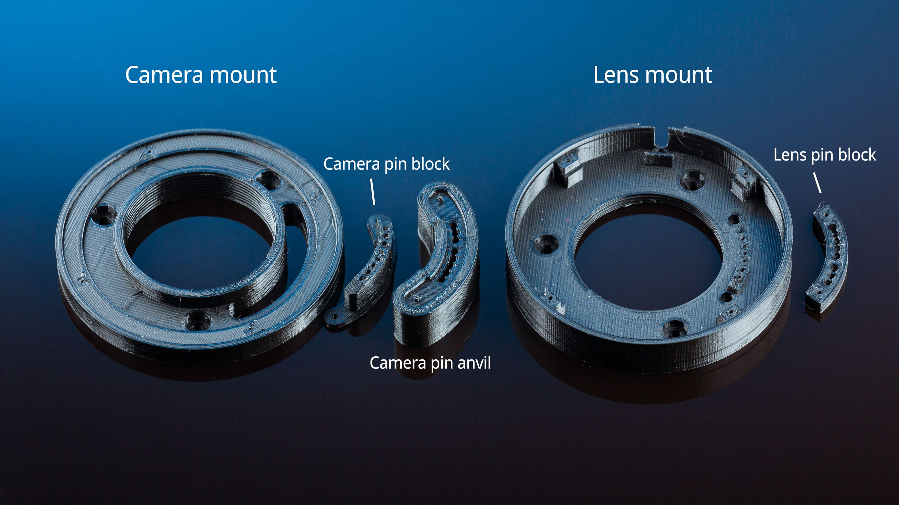
Printed mount components shown in their printed orientation

The two printed halves that make up the 300mm of extension tube
None of the printed models need supports. All of the models should be printed in black PETG (PLA will work but it is known to flow over time when a constant pressure is applied to it, which could cause the tube to warp or fasteners to loosen).
The seam position is set to "random" in many of these prints to prevent the layer-change scar from forming a continuous seam along the inside of the tube, which could reflect light or weaken the structure.
If you have a choice between using a powder-coated or smooth print surface, choose the smooth one. The joints between parts will be more light-tight.
Instructions are based on PrusaSlicer v2.
Camera mount
This is the piece that the Kenko camera-side mount ring will attach to. Start with the "0.2mm - QUALITY" preset, and set these settings:
- Layer height 0.2mm
- Perimeters: 2
- Infill 15% grid
- Seam position: Random
Lens mount
This is the piece that the Kenko lens-side mount ring will attach to. Start with the "0.1mm - DETAIL" preset, and set these settings:
- Layer height 0.1mm
- Perimeters: 2
- Infill 15% grid
- Seam position: Random
Camera pin block & lens pin block
These are the holders for the pogo pins on the lens mount side, and the nail contacts on the camera side. Both of these models are printed with the same settings, start with the "0.1mm - DETAIL" preset and set:
- Layer height 0.1mm
- Infill: 100%
Hopefully your printer does not have a big problem with overextrusion, because the 100% infill gives it no place to go except for making a mess in the internal holes and on the outside of the part! A little mess is okay because the holes are brought to final diameter with a drill anyway.
Camera pin block anvil
This is used as a tool to help with the installation of the nails in the camera pin block. Settings for this one are not critical:
- Layer height 0.2mm
- Perimeters: 2
- Infill: 15% grid, or whatever
300mm tube in two pieces
Both models are printed with the same settings. Start with the "0.2mm - QUALITY" preset and set:
- Layer height 0.2mm
- Perimeters: 2
- Infill: 10% grid
- Seam position: Random
Both models have 3xM3 nuts that need to be embedded into their structure during the print. So on the layers tab, add a colour-change at the 4.8mm height mark (this is the height of the cap that seals off the nut recess).
During printing, once the printer finishes printing the nut recesses, it will beep and ask for a filament change. At this point, install the 3 M3 nuts into their holes. The nuts must sit below the top surface, because otherwise the nozzle will crash into them on the next layer!
Now press the button to unload the filament, trim the filament tip, re-insert it and press the button to load it again. Press the button to confirm that the filament change was successful. Have tweezers or similar already prepared to grab the squirt of filament that is extruded just before the printhead departs.
Obviously changing from a filament back to itself is a little silly, but currently the alternative G-code "M601" which would just wait for the user to press a button to continue without requiring the filament to be swapped is buggy as hell.
Print time is around 11 hours for each part. Avoid printing them both simultaneously because this massively increases the cooling time between each layer which may reduce layer adhesion.
I found that I could print these tubes just fine with the print speed set to 115%, I made this adjustment after the nut wells were capped off.
150mm tube
If you're looking for an extension tube which is a little less ridiculous, you can print this single tube to make a 150mm extension tube (instead of the two tubes that make up the 300mm version above).
Print settings:
- Layer height 0.2mm
- Perimeters: 2
- Infill: 10% grid
- Seam position: Random
This has two sets of embedded M3 nuts, one set near the bottom of the tube and set one near the top. So you'll need to add a colour change at 4.8mm and 129.6mm (these are the heights of the caps that seal off the nut wells) so the print will stop for you to insert the nuts as described above.
150mm is still enough extension to reach magnifications exceeding 1x with a 100mm regular lens, or a 180mm macro lens!
Assembly
After printing is complete, now it's time to assemble everything!
Camera pin block
The camera pin block is the part that'll hold the nail-style contacts for interfacing with the camera's mount. It is possible to re-use the original Kenko contact block with no modifications instead of building this piece (from the 20mm tube only). But isn't it more fun to make it yourself?
Drill the 8 pin holes out as shown below with a 0.95mm drill bit so that the pins won't cause so much stress when they're inserted (the pins are 1.02mm diameter).
Clean out the 2 screwholes on both ends with a 1.2mm drill to allow the self-tapping screws to enter later.
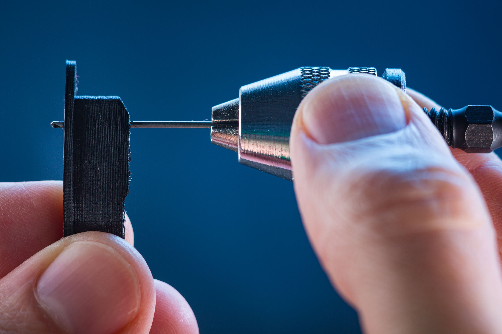
The holes are most easily and precisely drilled by hand
Place the camera pin block on top of the printed anvil for the next step. This will prevent the inserted pins from being hammered into your desk!
Place a pin in one of the holes and give it a light tap from the hammer to get it started as shown below. Check that the pin is standing up straight and adjust it if it is not. Now finish hammering it in with light taps and lots of taps. Hit the head of the nail as square as possible to avoid damaging its edge. Avoid using heavy swings because this tends to cause the pin to bend in the mount - you can bend it back using your fingers if this happens but it's best to avoid it in the first place!
Once all the pins are installed, tap the top of the block a couple of times to ensure that all the pins are flush with the surface. The pin heads must not be sitting proud of their surrounding plastic because this could allow their edges to scratch the pogo pins that wipe over them during lens mounting.
It is tempting to forego the hammer for installing the pins and use a more refined approach, but learn from my mistakes:
- Why not use a 3-jaw drill chuck or pin vise to hold the head of the contact and just push it into the mount? This works a treat, but because the head is soft you'll end up bending it into a trefoil shape. RIP!
- Why not press the pin into the hole by using your soldering iron? The gold plating on the pin dissolves instantly into the residual solder on the iron's tip, ruining the contact. In addition the extended heat application causes the mount to deform!
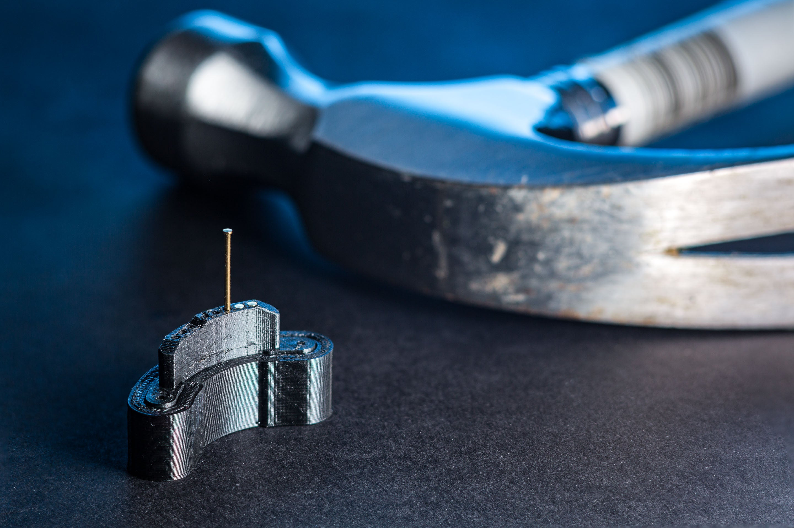
Get a pin started with one light tap and check alignment before continuing
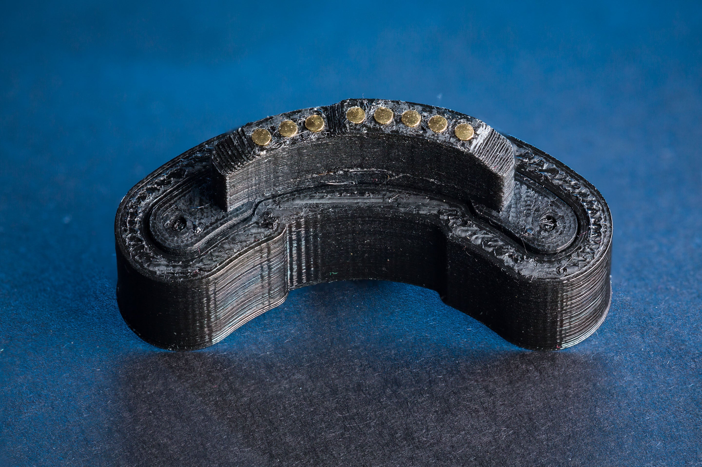
All pins installed! Now you can lift the pin block off the anvil
Unscrew and detach the Kenko tube's camera-side metal mount. 8 small springs and 8 gold contacts will fall out during this process. We won't be using these, but put them in a safe place in case you want to rebuild your Kenko tube later. The release pin spring (thicker than the gold ones used for the contacts) and a metal slug will probably fall out too, don't lose these.
Unscrew the two black M1.7 machine screws that hold the Kenko's original camera pin block to the metal camera mount and replace it with your printed one, screw it back in.
The geometry of the connector pins on the camera mount should resemble that of the original Kenko tube. In particular the row of 5 data pins should be just slightly below the level of the black plastic shield provided by the original Kenko mount (they sit maybe 0.1mm below the shield in the original product).
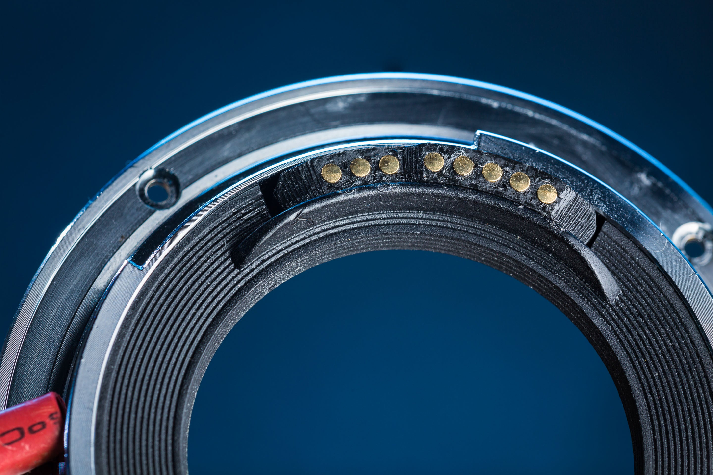
Original camera contact pins replaced with the printed one!
Lens pin block
This is the block that the base of the pogo pins will sit in for interfacing with the lens.
Start by clearing out the 8 solder tail holes in the lens pin block with a 0.75mm drill bit. This is slightly larger than the solder tails of the pogo pins themselves (0.64mm), which allows the pins some lateral movement. This allows them to align themselves with the lens mount without being placed into shear, which would cause them to bind up.
Clean out the two screwholes at the ends with a 1.2mm bit.
Insert the pogo pins into the lens pin block. They should insert (and fall out) with no force required, be able to spin freely, and wobble from side to side slightly. Don't worry about the depth that they're sitting at, they will get clamped to depth in the next step.
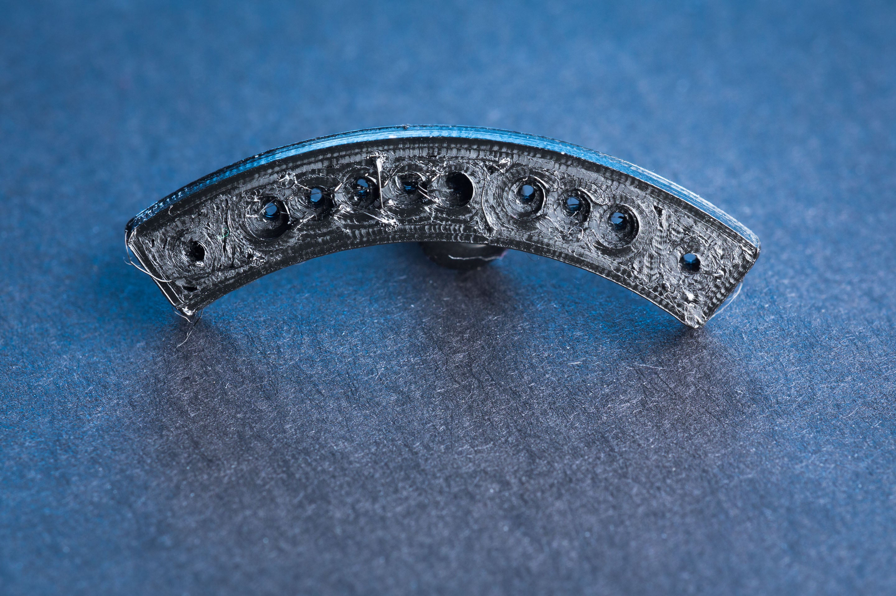
Solder tail holes cleared with drill
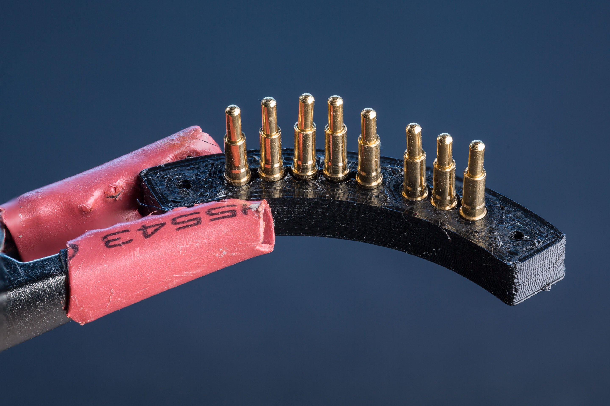
Pogo pins inserted
Lens mount
On the printed lens mount, clear out the 4 small screwholes on the towers around the perimeter (that the metal mount will attach to) with a 1.2mm bit.
Clear out the 8 pin holes with a 1.3mm drill bit as shown below. This is larger than the pins (1.07mm) to avoid any friction from the printed part impeding the travel of the pin. But note that it must be a smaller diameter than the shoulder of the pin (1.5mm) because otherwise the pin could escape out of the top of the mount.
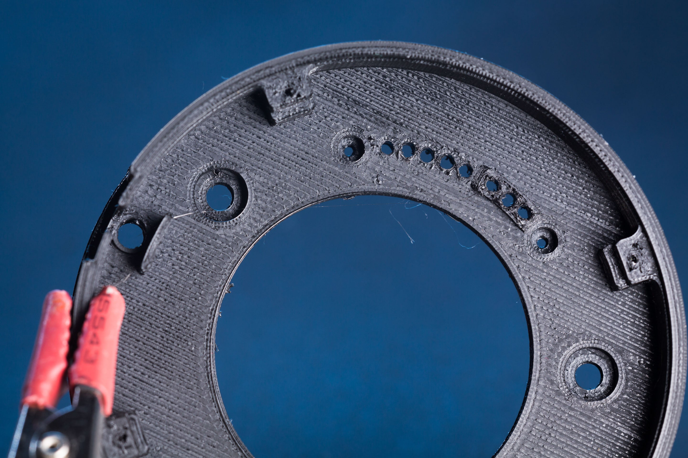
8 pin holes cleared with 1.3mm drill bit
Hold the pin block against the underside of the lens mount so that the pogo pins stick through the mount from below. Make sure each pin finds its corresponding hole.
The pin block won't sit flush with the underside of the lens mount because the pogo pin housings have not been pushed into their final resting depth yet.
Insert 2 M1.7 screws from the top of the mount into both ends of the pin block to grab it and pull it until it's pretty much flush with the underside of the mount (a small gap is fine). Take care to tighten the screws evenly to avoid bending the pins! (screw one in a little, then the other a little, and continue, so the block stays roughly parallel with the mount surface).
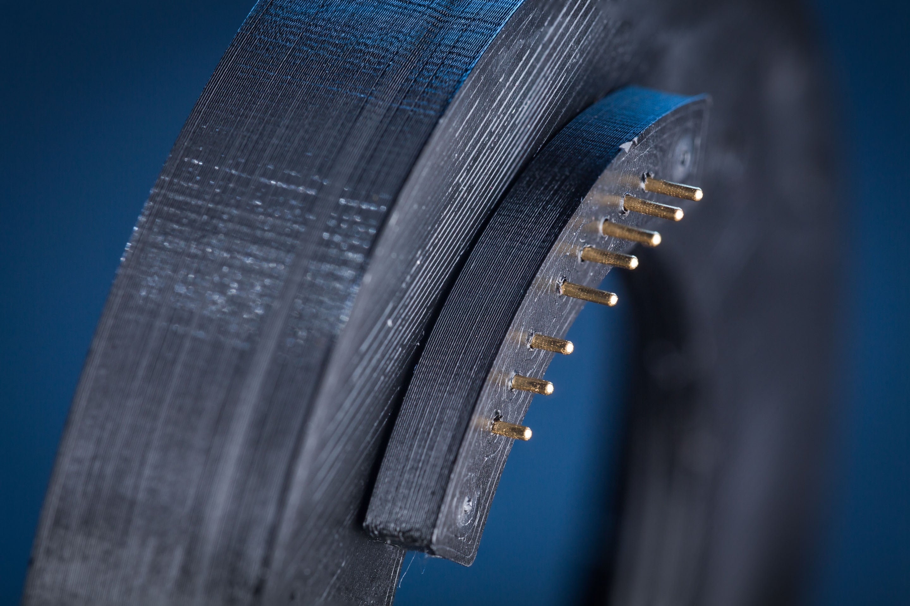
After installation. Note that the three power pins and the five data pins are at similar heights to their fellows. The three power pins will not protrude as far as the data pins.
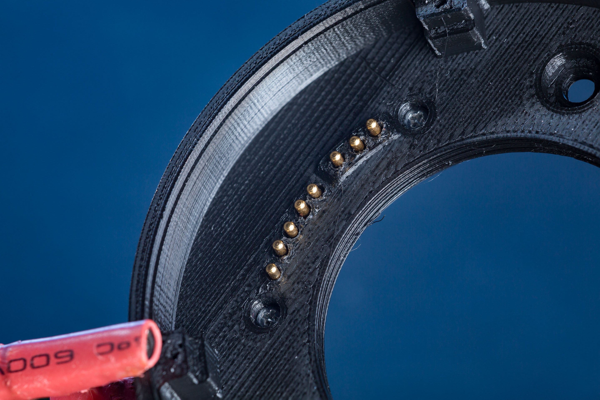
Mount side after installation
Run your finger along the sprung contacts and verify that they move smoothly without getting jammed in the down position. If a pin is jamming, first check that the lens pin block is parallel with the mount surface (you may need to tighten one of the screws to even it up), and secondly re-drill the offending holes. Try drilling the same hole from both ends to clear any debris. If the hole is slightly misaligned you may need to scrape out along one side of it with your drillbit.
Now we'll solder the ribbon cable onto the tails of the pogo pins.
The ribbon has 10 conductors, but we only need 8. You can either separate and remove conductor #9 and #10 (the red stripe is #1), or you can retain the extra 2 conductors. You could, for example, double up the conductors used for the power pins. According to Wikipedia, the outermost pin of the group of three is VBat, and the other two are GND. I removed the extra conductors before I realised that I could be doubling them up...
At one end of the ribbon cable, separate and splay out the conductors. Strip off enough of the insulation to give a good connection with the tails of the pogo pins. Tin each conductor. Paint the pogo pin tails with your flux pen, then solder the conductors one by one to the pins. You'll want some excess solder on your tip to replace the solder that the pogo pin will absorb. The red stripe should go at the end with the three power pins (see the photo below).
Note that your soldering temperature is much higher than the melting point of the enclosing plastic. Solder each pin nice and quickly, do not hold the iron on any pin for longer than necessary. After everything's cooled down, give the wires a tug to ensure that they're firmly attached. If the wire solders on securely, but the joint is ugly, it's better to leave that alone rather than re-work it and potentially overheat the plastic.
Do not leave a large unstripped length of wire floating free above the pin, because it could short to neighbouring pins.

Please don't solder-shame me!
Now it's time to assemble the two long tubes.
There is a hole in the top of the camera-side tube which you need to insert an M3 nut into:
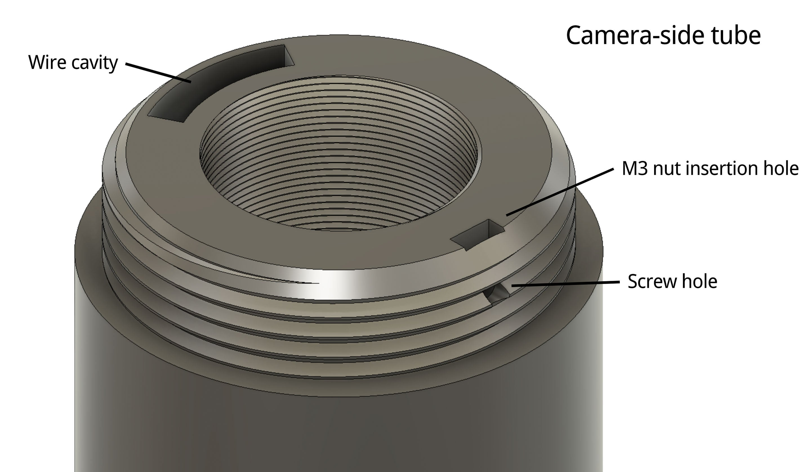
Then screw the lens-side tube down onto this tube until the screwhole that passes through the threads of both tubes lines up (this will be slightly before the maximally torqued-down position). Thread a screw through this hole and into the nut to lock the two tubes together. This screw prevents the tubes from unscrewing, which is important because unscrewing the tubes later would cut the ribbon cable running through them in half!
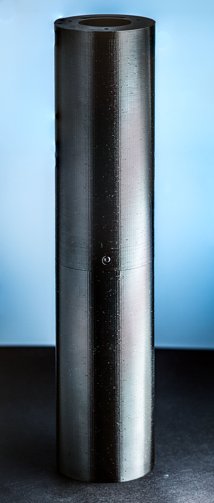
The assembled tubes. I believe the zits on the surface correspond to the layer-change points.
The tubes are not identical. The lens-side tube is the one that the joining screw's head is pressing up against (the top one in the photo shown above).
Clear out the small 4 screwholes on the perimeter of the printed camera mount with a 1.2mm drill.
On the camera-side tube (the bottom one), attach the printed camera mount to the end of the tube using 3 M3 screws. Ensure that the wire channel in the tube lines up with the corresponding hole in the camera mount:
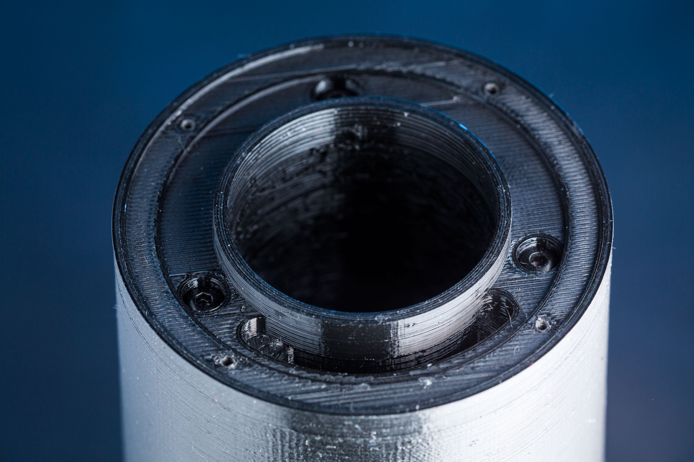
Camera-side printed mount with outer holes cleaned with a 1.2mm drillbit. Attached to the tube using 3x black M3 screws in the inner ring
Thread the free end of the ribbon cable through the wire cavity from the lens-side of the tube all the way through to the camera side. Press the printed lens mount (with the soldered cable) against its mating surface on the tube so you can measure the length of the ribbon cable accurately. Trim it off about 15-20mm beyond the camera mount surface. You need a little slack here so that you'll be able to grab the end of the cable later to plug it onto the back of the camera contact block.
Now pull the lens mount and the trimmed ribbon cable back out of the tube so you can work on it more easily.
Splay out the conductors and strip the ends to a length of about 3mm. Solder a pin receptacle to each conductor (n.b. do not hold the pin receptacle with bare fingers while doing this, those get HOT). Cut some heatshrink to cover each pin receptacle and its solder tail, and shrink it over each receptacle. Your end result should look like this:
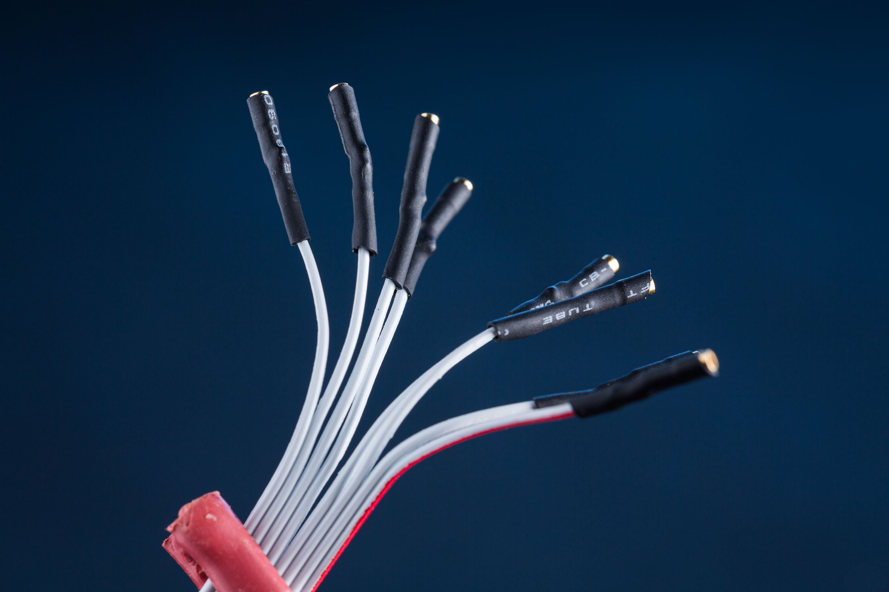
Pin receptacles for the camera-side mount soldered and sleeved
Tape the receptacles together in a line so they'll be easier to slide through the extension tube (and so that you know which order they go in!) Slide the cable back through the tube from the lens side to the camera side - I found the easiest way to do this was to continuously wiggle the cable from side to side while applying pressure, which allowed steady progress and no hitches.
Once you've got the cable poking out of the camera end of the tube, attach the printed lens mount to the tube with 3x M3 screws so it won't come loose and pull the ribbon cable back into the tube.
Your end result will not look like the photo below, because when I assembled this, I forgot to first attach the printed camera mount to this bottom surface of the tube when I was measuring the ribbon cable, and so ended up trimming it too short. You can see that my pin receptacles barely make it out of the bottom of the mount, which made them a pain in the ass to attach later.
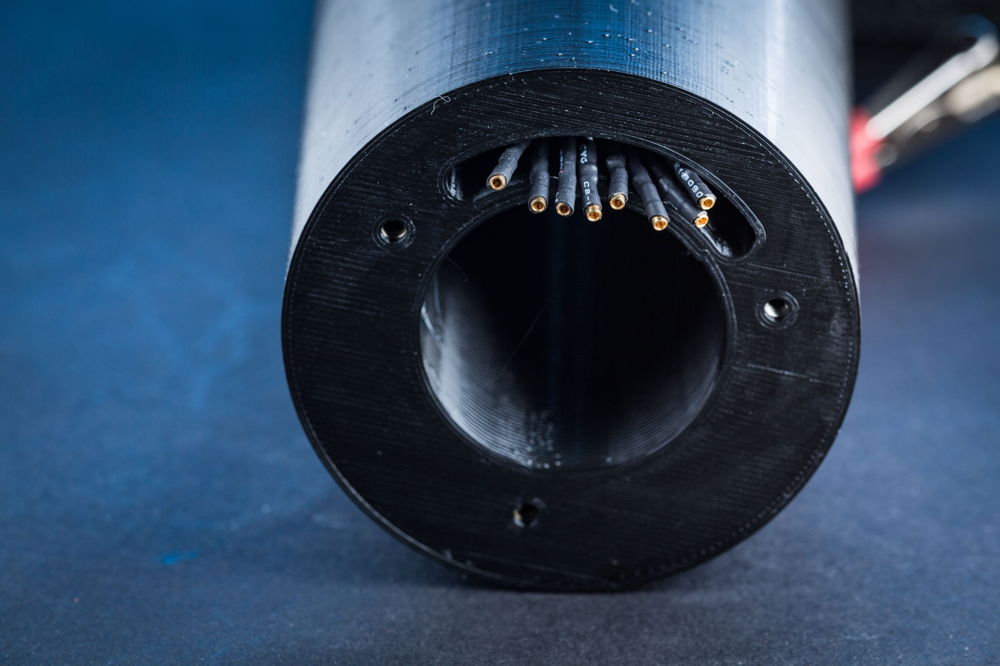
Your result at the camera end should NOT look like this, because unlike me you will have the printed camera mount attached here already and so have trimmed your ribbon cable a little longer :).
Now hold the metal camera mount close to the end of the tube, and use tweezers to plug each pin receptacle onto the corresponding pin on the back of the camera pin contacts.
Use a multimeter in continuity-test mode (or resistance measuring mode) to check that each pin on the lens side connects to the corresponding pin on the camera side (and neighbouring pins are not shorted out!).
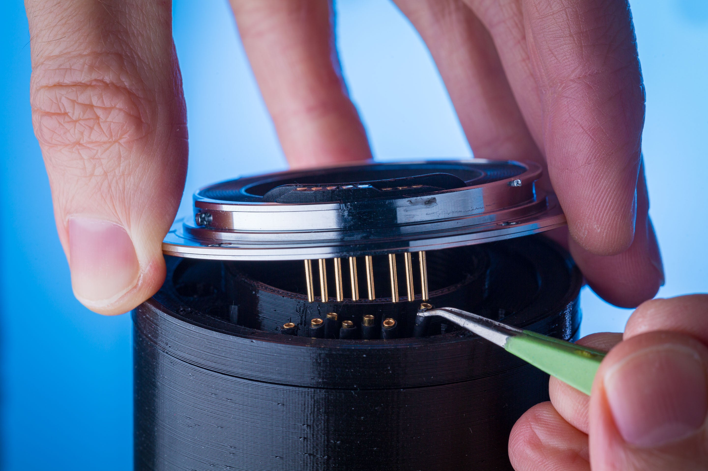
Plugging the pin receptacles onto the back of the camera contacts
Attaching the metal camera mount
Once you've got them all plugged on there correctly, you can screw the metal camera mount onto the tube using 4x M1.7 screws. You're done at the camera end now.
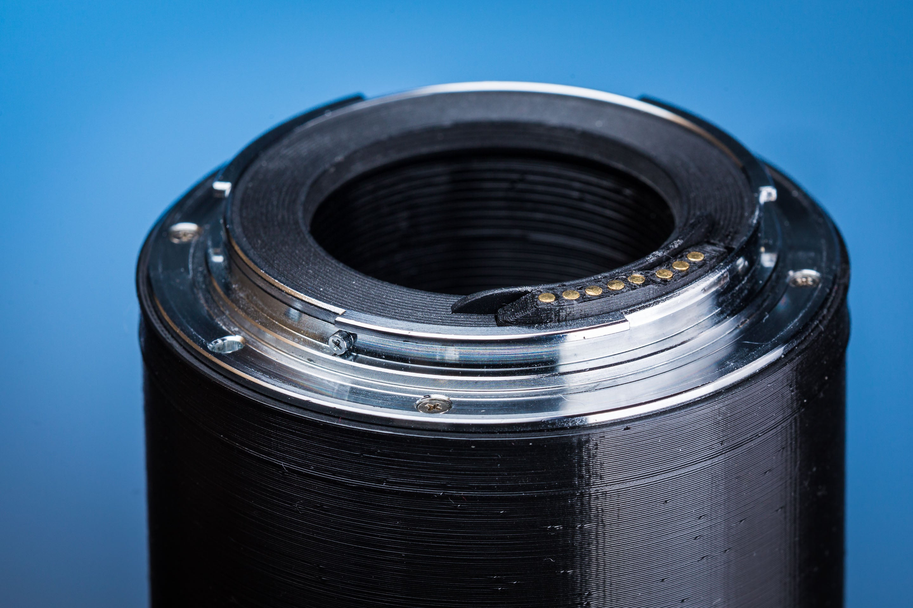
The completed camera mount
Finishing the lens mount
On the printed lens mount, drop the release pin spring into its hole (the hole next to the slot on the outer diameter as shown below) and put the release pin from the original Kenko mount on top of the spring (the spring fits into a socket in the base of the release pin). Seat the metal lens mount on top. Now verify that the release lever can smoothly slide up and down - if it is binding, rotate the metal ring on the mount surface until it slides freely. Secure the mount with 4x M1.7 screws, but don't tighten them fully yet, first recheck that the release lever still slides freely and adjust the mount if this is not the case. Then tighten the screws fully, and recheck again.
If the release lever cannot travel smoothly, the chances are good that at some point you will mount a lens to the tube and not realise that the locking pin failed to deploy under spring pressure. This will allow the lens to twist itself off the tube and fall to the ground!
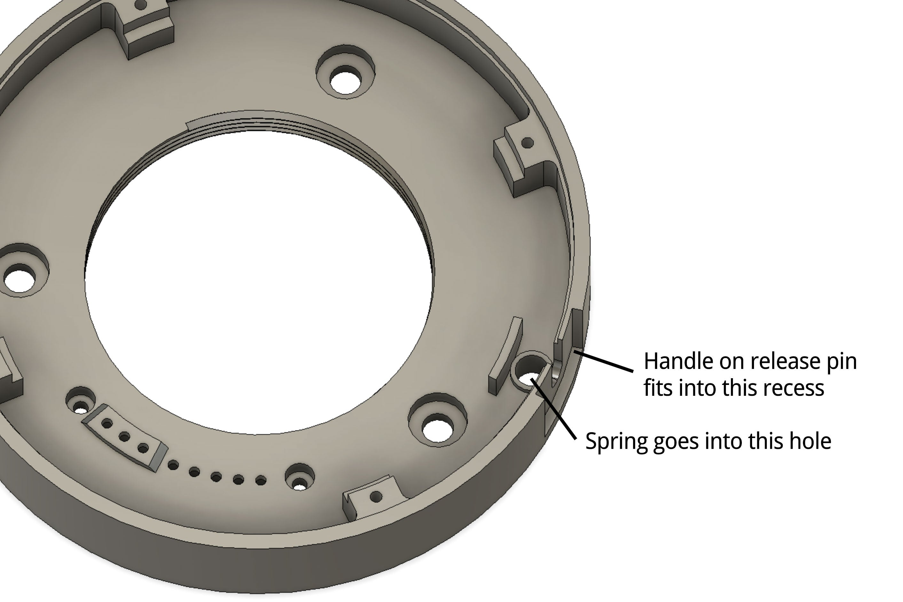
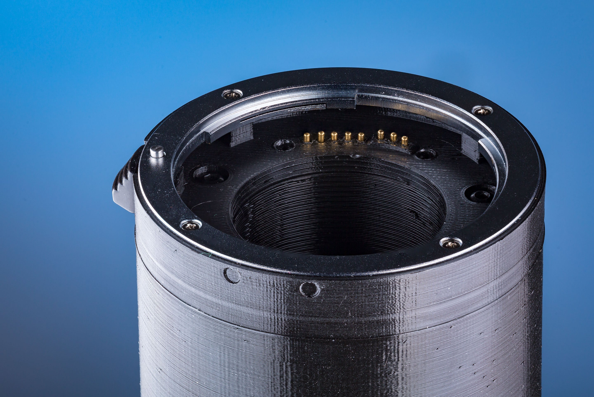
Lens side assembly complete!
Alignment markings
If you like, you can paint red and white alignment dots on the outside of the tube to match the original - divots are provided in the printed surface for these.
Post-assembly
Preflight checks
At this point there are some things to double check:
- The lens release pin should depress smoothly and pop back up under spring pressure. At full depression its head must be below the mount surface.
- The heads of the M1.7 screws that are holding the metal mounts on should sit below the surrounding metal surface, or else the screwheads will scratch the mounts of the lens/camera and nothing will fit correctly.
- The heads of the M3 screws on the lens mount must lie below the plastic printed surface mount - or else the rear of the lens could be scratched by them.
- The pogo pins on the lens mount should depress smoothly with a finger, and spring back to their original position with no sticking or catching.
- Remove any loose filament strings from the tube as much as possible, as these can become debris in your camera if they break off.
- A multimeter should confirm continuity between the corresponding pins on the camera and lens side of the tube, and neighbouring pins should not be shorted to each other.
If you have a spare Kenko extension tube, plug it onto the lens- and camera- side of the 300mm tube to check that everything mounts smoothly. If you feel something stopping you from mounting the tube well before the locking pin would deploy (like 30 degrees before), stop and investigate. A hitch in this position means that the pogo pins on one side of the connection are crashing into the contacts on the other side. The geometry of the pogo pins or camera contacts may be incorrect. e.g. if the pogo pins are protruding much too far (+0.5mm), their flat sides can crash against the mating surface on the other side (instead of their rounded heads), which will not allow them to retract, so they'll be torn off if you continue rotating the lens.
Take a look at the contacts of the test extension tube and verify that they haven't been gouged or scratched by your 300mm tube. You want to find this out before you mount it to your expensive lenses and cameras!
Use your multimeter to verify that the signals make it all the way through the 300mm tube and through the attached spare Kenko tube - this checks that the contacts and pogo pins align properly with the original tube. e.g. if some pogo pins have stuck down, some of the pins will not contact the other side and the continuity check will fail.
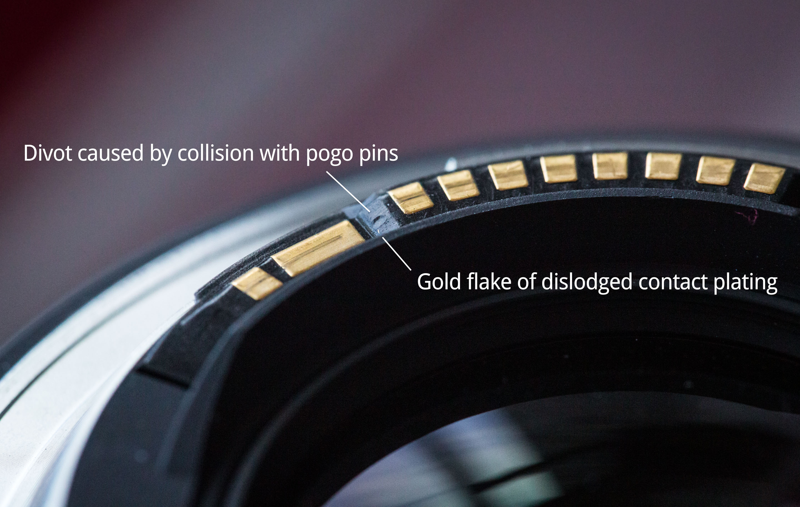
Lens contacts damaged by forced mounting with sticking pogo pins
Debugging pogo pins
A variant of the lens mount model ("Lens mount with inspection window") has been provided to debug issues with the pogo pins meshing with lens contacts. This cuts a window into the side of the mount that allows you to watch as the pogo pins make contact with the lens. See the photos below for a lens mounting sequence:
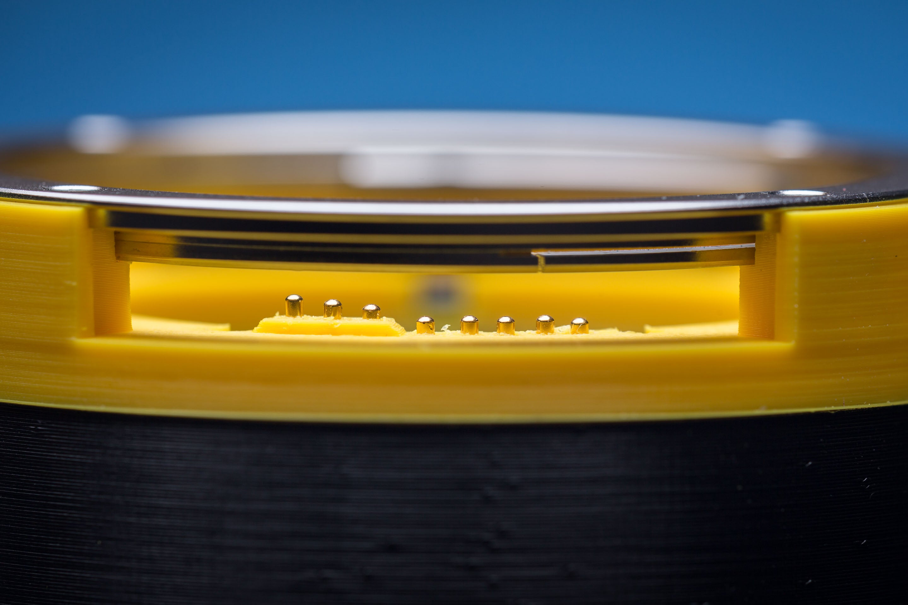
Printed lens mount with inspection window (yellow) allows the pogo pins to be observed. Notice how the leftmost pin is much higher than its fellows? This isn't okay and causes it to bind during mounting.
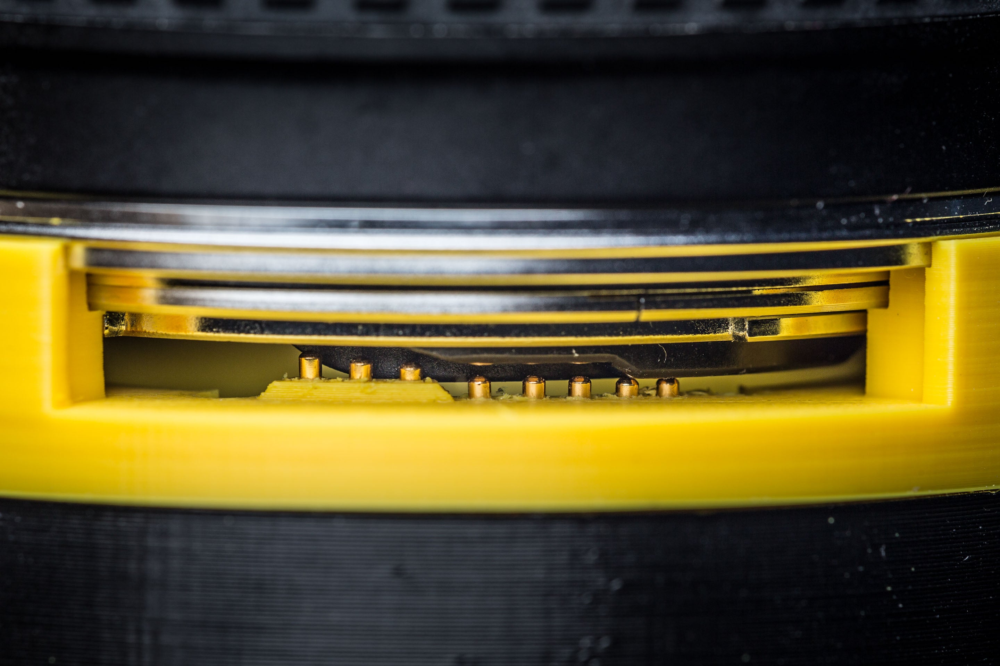
During lens mounting. Lens' contacts are rotating in from the right to the left side of this image, here two of the pogo pins have been depressed by the lens
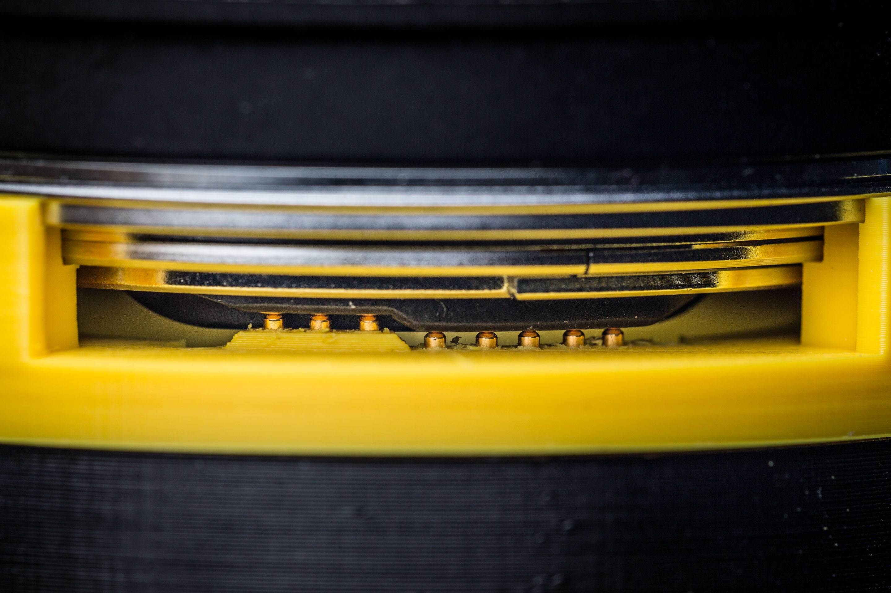
Lens fully locked in position
Without using this mount with the inspection window, you can still somewhat observe the action of the pogo pins by viewing from the bottom, if you first detach the lens mount from the extension tube. (You can at least tell at which pin number a collision occurs)
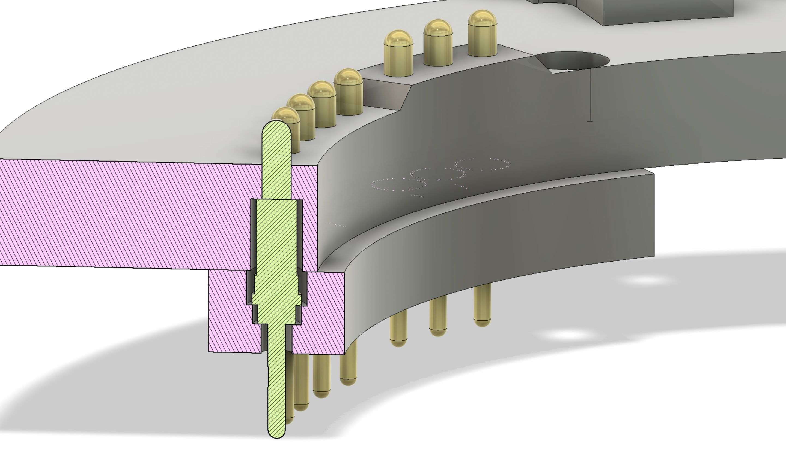
Cross section of a mount of a pogo pin
Lens selection
For the 300mm tube it only really makes sense to use it with lenses 100mm+ (ideally a 150mm or 180mm macro lens). Short lenses will be unable to focus because their focal plane will end up inside the lens (and the magnification will be crazy high).
With my Sigma 180mm f/3.5 macro, 300mm of extension drops the exposure by around 4 stops, so my viewfinder becomes as dark as selecting f/14 on a regular lens and holding the DOF preview button. This is still light enough to see through the finder when shooting in daylight, but it's a pretty close thing.
That darkening means that you'll almost certainly need to use a flash to illuminate your subject (this is the same with all high-magnification macro). The bonus with using a flash is that it'll freeze your subject, so you don't need to worry so much about camera shake or subject movement.
By the way, that Sigma 180mm f/3.5 EX DG APO macro lens is fantastic value for this project and for macro photography in general, with its long focal length offering a luxuriously high working distance. It's out of production, but can be found used on eBay for around US$380. Note that there is an older, cheaper version without the "DG" that I haven't tested.
Warnings
This tube can damage or destroy your lens, camera, or both. Here are some specific hazards that I have identified, but more hazards exist:
- Lens or camera contacts can be scratched or broken by the tube
- Rear elements of lenses, especially those that protrude beyond the mount surface, can be scratched (this is mostly an issue for exotic lenses like ultrawides. Don't even think about mounting the 50mm f/1.0, with its crazy rear element, to this thing!).
- Stray strings of filament flaking off can become debris that could ruin the camera
- Problems with locking lever geometry on the lens side of the tube can result in the lens being unable to release from the tube. If this happens try pressing down on the lever as vertically as possible (close to the tube wall), pressing on the wrong point can cause it to tilt and bind against the layer lines. If all else fails, there's always the dremel... A similar failure on the camera side is unlikely because the camera metal mount is unmodified from the original.
- A structural failure of the tube can cause the lens, camera, or both to fall to the ground. Do not carry the combination by the camera alone, support both the lens and the camera, and additionally use a neck or wrist strap to secure the camera.
- Shorts or misconnections in the pins could theoretically destroy the electronics of the lens, camera, or both. However the electronics are probably designed to be robust to survive mis-mating.
- The tolerances of the pogo pin mounting is appalling compared to the original injection-moulded mount (particularly in the degree of tilt each pogo pin can experience), which could cause intermittent connections or shorts between neighbouring pins, or destruction of the pogo pins and subsequent scratching of the lens contacts.
- Note that gouges in the slope of a lens' contact block could subsequently cause damage to your camera's pins the next time the lens is mounted there.